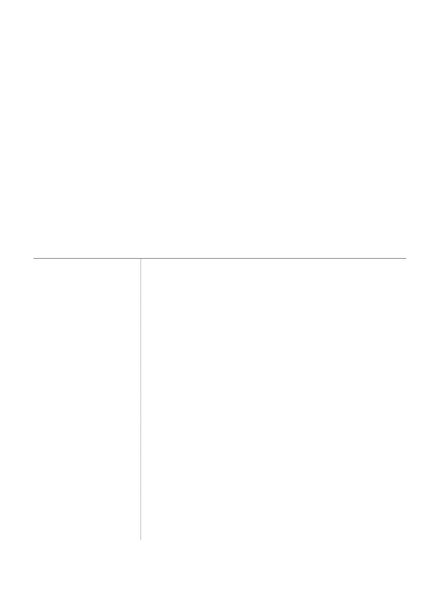
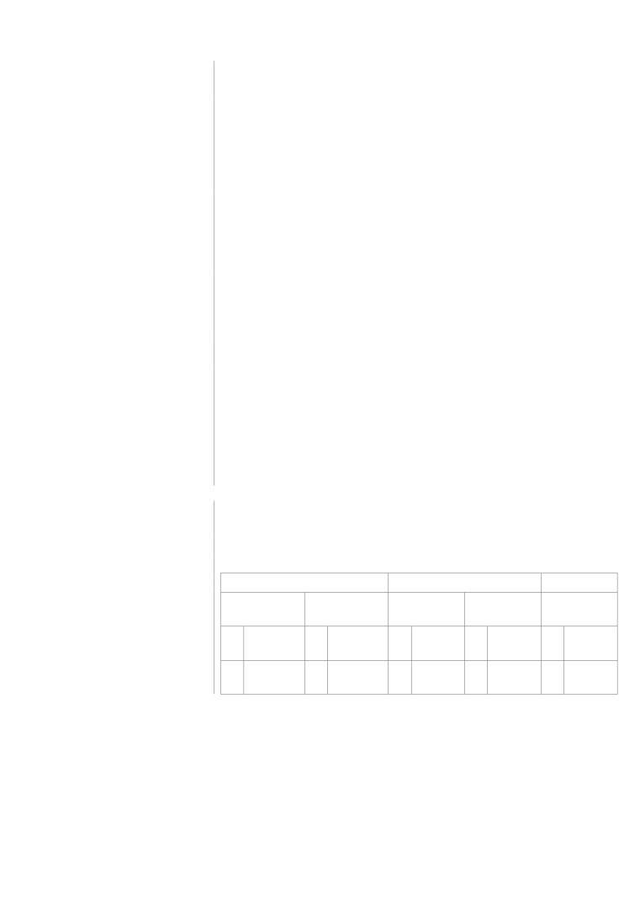

Gianluca Sottile - Curriculum Vitae
CURRICULUM dell’ATTIVITA’ SCIENTIFICA E DIDATTICA di
GIANLUCA SOTTILE
Reso ai sensi degli artt. 46, 47 e 48 del D.P.R. n. 445 del 28/12/2000
Il sottoscritto Gianluca Sottile, nato a Palermo (PA) il 23/04/1988, C.F. STTGLC88D23G273V,
residente a Palermo (PA), in Via Fondo Vega n. 17, C.A.P. 90131, tel. 3881779786, email certificata
(PEC) gianluca.sottile@pec.it, consapevole che le dichiarazioni mendaci sono punite ai sensi del
Codice Penale e delle Leggi Speciali in materia,
DICHIARA
che le informazioni riportate nel seguente curriculum dell’attività scientifica e didattica, comprensivo
di tutte le informazioni sulla produzione scientifica, sull’attività didattica, sulle cariche istituzionali e
sui titoli acquisiti, corrispondono a verità.
Dati Anagrafici e
Contatti
Nome / Cognome
Gianluca Sottile
Luogo di nascita
Palermo (PA), Italia
Data di nascita
23 Aprile 1988
Cittadinanza
Italiana
Codice Fiscale
STTGLC88D23G273V
Stato civile
Coniugato
Residenza
Via Fondo Vega, 17, 90131 Palermo (PA)
Telefono
-
Cellulare:
(+39) 3881779786
E-mail
gianluca.sottile88@gmail.com
Pec
gianluca.sottile@pec.it
Home page
Orcid
Scopus, Author ID
57197724197
Researchgate
Google scholar
Formazione e
Titoli Accademici
Date
01/2015 - 21/03/2018
Titolo della qualifica
Dottorato di Ricerca in Scienze Economiche, Statistiche, Psicologiche e
rilasciata
Sociali (XXX ciclo) - Ph.D. - “Doctor Europaeus” (SSD: SECS-S/01)
Gianluca Sottile - Curriculum Vitae
Principali
Titolo della tesi: “Penalized regression and clustering in high dimensional
tematiche/competenze
data”. Supervisor: Prof. M. Chiodi
professionali possedute
(Cluster analysis, Discriminant analysis, Penalized regression, SNPs
Analysis, Genomics, Quantile regression, Functional data analysis)
Nome e tipo
Università degli Studi di Palermo
d'organizzazione erogatrice
dell'istruzione e formazione
Date
10/2012 - 30/10/2014
Titolo della qualifica
Laurea Magistrale in Scienze Statistiche (LM82, 110/110 Cum Laude)
rilasciata
Principali
Titolo della tesi: “Tecniche di classificazione per dati genetici ad alta
tematiche/competenze
dimensionalità”. Supervisor: Prof. M. Chiodi
professionali possedute
Nome e tipo
Università degli Studi di Palermo
d'organizzazione erogatrice
dell'istruzione e formazione
Date
09/2007 - 24/07/2012
Titolo della qualifica
Laurea triennale in Matematica Applicata all’Industria e alla Finanza
rilasciata
(L-35)
Principali
Titolo della tesi: “Sistemi dinamici ipercaotici: analisi di un sistema di Lorenz
tematiche/competenze
modificato”. Supervisor: Prof.ssa G. Gambino
professionali possedute
Nome e tipo
Università degli Studi di Palermo
d'organizzazione erogatrice
dell'istruzione e formazione
Posizioni Accademiche
Date
30/07/2019 -
Lavoro o posizione ricoperti
Ricercatore tempo determinato tipologia A - SECS-S/06
Principali attività e
Titolo: “Metodi E Modelli Numerici Per L’analisi Dei Network Di
responsabilità
Interazione Nelle Terapie Geniche”.
Nome e indirizzo del datore
Dipartimento Scienze Economiche, Aziendali e Statistiche - Università
di lavoro
degli Studi di Palermo, sui fondi del progetto PON-Attrazione
Internazionale e Mobilità, linea di attività AIM1873193 (linea 1).
Responsabile scientifico: Prof. Andrea Consiglio
D.R. 2217 del 03/07/2019
Date
02/2018 - 02/2019
Lavoro o posizione ricoperti
Borsista per attività di ricerca post-lauream
Principali attività e
Titolo: “Applicazioni di tecniche statistiche per la selezione di Single
responsabilità
Nucleotide polymorphisms (SNPs) utili alla definizione di un modello di
tracciabilità/autenticazione di prodotti lattiero-caseari tipici e/o con
marchi DOP ottenuti da razze ovine autoctone siciliane”.
Gianluca Sottile - Curriculum Vitae
Nome e indirizzo del datore
Dipartimento Scienze Agrarie e Forestali - Università degli Studi di
di lavoro
Palermo, sui fondi del progetto F/050267/03/X32 Asse 1, azione 1.1.3,
Programma Operativo Nazionale Imprese e Competitività 2014-2020.
Responsabile scientifico: Dott. Nicola Francesca
Prot. 0012719 del 16/02/2018
Periodo di permanenza
presso Istituzioni di
Ricerca estere in qualità di
“Visiting Fellow”
Date
03/09/2016 - 02/12/2016
Titolo della qualifica
Periodo di visiting - The Institute of Environmental Medicine, Karolinska
rilasciata
Institutet, Stoccolma, Svezia. Supervisor: Prof. M. Bottai
Principali
Tale periodo ha contribuito alla realizzazione del paper “A penalized
tematiche/competenze
approach to covariate selection through quantile regression coefficients
professionali possedute
models”, pubblicato su Statistical Modeling.
Esperienza Professionali
Accademiche
Date
04/2019 - in corso
Lavoro o posizione ricoperti
Docente a contratto (6 CFU 48 ore)
Principali attività e
Contesti socio economici del disegno industriale (SSD: SECS-S02)
responsabilità
LT Disegno Industriale
Nome e indirizzo del datore
Università degli Studi di Palermo - Dipartimento di Architettura (DARCH)
di lavoro
Firmato in data 29/03/2019 con inizio 01/04/2019
Date
12/2018 - 07/2019
Lavoro o posizione ricoperti
Docente a contratto (8 CFU)
Principali attività e
Statistica (SSD: SECS-S01)
responsabilità
LT Economia e gestione delle imprese.
Nome e indirizzo del datore
Universitas Mercatorum - Università telematica delle Camere di
di lavoro
Commercio Italiane - Prot. 0002657/2018 del 28/12/2018
Date
12/2018 - 07/2019
Lavoro o posizione ricoperti
Tutor disciplinare per le materie afferenti le discipline Statistiche
Principali attività e
La predisposizione e l’aggiornamento dei sussidi didattici virtuali con il
responsabilità
coordinamento del docente della materia; l’erogazione e la correzione delle
esercitazione intermedie; la collaborazione con il docente nell’erogazione
nella didattica interattiva; la presenza alle Commissioni di esame di
Palermo e Caltanissetta.
Nome e indirizzo del datore
Universitas Mercatorum - Università telematica delle Camere di
di lavoro
Commercio Italiane - Prot. 002406/2018 del 11/12/2018
Date
04/2018 - 06/2018
Lavoro o posizione ricoperti
Docente a contratto (6 CFU, 52 ore)
Principali attività e
Statistica applicata ai sistemi ecologici (SECS-S02)
responsabilità
LM Biologia Marina / LM Scienza della Natura
Gianluca Sottile - Curriculum Vitae
Nome e indirizzo del datore
Università degli Studi di Palermo - Dipartimento di Scienze della Terra e
di lavoro
del Mare (DiSTeM) - Prot. 0000378 del 15/03/2018
Date
01/2018 - 10/2018
Lavoro o posizione ricoperti
Tutor disciplinare per le materie afferenti le discipline Statistiche
Principali attività e
La predisposizione e l’aggiornamento dei sussidi didattici virtuali con il
responsabilità
coordinamento del docente della materia; l’erogazione e la correzione delle
esercitazione intermedie; la collaborazione con il docente nell’erogazione
nella didattica interattiva; la presenza alle Commissioni di esame di
Palermo.
Nome e indirizzo del datore
Universitas Mercatorum - Università telematica delle Camere di
di lavoro
Commercio Italiane - Prot. 1051/2017 del 10/11/2017
Date
31/05/2017 - 09/06/2017
Lavoro o posizione ricoperti
Docente a contratto (10 ore)
Principali attività e
Calcolo combinatorio (disposizioni - permutazioni - combinazioni); la
responsabilità
probabilità (la valutazione della probabilità e i primi teoremi sul calcolo
della probabilità - probabilità composta ed eventi indipendenti - la formula
di Bayes); le distribuzioni di probabilità (distribuzione binomiale -
distribuzione di Poisson e distribuzioni continue).
Nome e indirizzo del datore
Istituto d’Istruzione Superiore Statale “Nicolò Palmeri”
di lavoro
Piazza Giovanni Sansone, 12, 90018 Termini Imerese (Palermo, Italia)
Prot. 0002372 del 06/06/2017
Date
08/03/2017 - 22/05/2017
Lavoro o posizione ricoperti
Collaboratore nell’ambito del Progetto Piano Lauree Scientifiche -
Statistica (15 ore)
Principali attività e
Calcolo combinatorio (disposizioni - permutazioni - combinazioni); la
responsabilità
probabilità (la valutazione della probabilità e i primi teoremi sul calcolo
della probabilità - probabilità composta ed eventi indipendenti - la formula
di Bayes); le distribuzioni di probabilità (distribuzione binomiale -
distribuzione di Poisson e distribuzioni continue).
Nome e indirizzo del datore
Università degli studi di Palermo
di lavoro
Piazza Marina, 61, 90133 Palermo (Italia)
Prot. 137 del 08/03/2017
Esperienza Professionali
non Accademiche
Date
30/11/2012 - 31/07/2013
Lavoro o posizione ricoperti
Analista e consulente Matematico/Statistico
Principali attività e
Modellizzazione Matematica/Statistica della Shelf-Life dei prodotti di
responsabilità
quarta gamma.
Nome e indirizzo del datore
Ce.R.T.A. Soc. Cons. a.r.l.
di lavoro
Via Gramsci, 89/91, 71122 Foggia (Italia)

Gianluca Sottile - Curriculum Vitae
Progetti di Ricerca
e Convenzioni
Dal 05/02/2017 al 05/02/2020
Programmi di Ricerca
“Complex space-time modeling and functional analysis for probabilistic
Scientifica di Rilevante
forecast of seismic events”
Interesse Nazionale (PRIN)
Coordinatore e responsabile scientifico Prof.ssa G. Adelfio.
Università degli Studi di Palermo, prot. 20157PRZC4_001.
Settore ERC: PE1.
Programma Operativo
Dal 2018 al 2020
Nazionale (PON) Imprese e
Progetto F/050267/03X32 - Asse 1, azione 1.1.3
Competitività 2014-2020
Coordinatore Nazionale Dott. N. Francesca.
Università degli Studi di Palermo, Dipartimento di Scienze Agrarie,
Alimentari e Forestali (DSAAF).
Progetto Piano Lauree
Dal 2016 al 2018
Scientifiche (PLS) finanziato
Coordinatore Nazionale Prof. M. Attanasio.
dal M.I.U.R.
Università degli Studi di Palermo, Dipartimento di Scienze Economiche,
Aziendali e Statistiche (DSEAS).
Attività Editoriale
Revisore di articoli scientifici per: Journal of Applied Statistics, Journal of
Statistical Modelling
Attività di Servizio
agli Studenti
- Correlatore di tesi del Corso di Laurea Magistrale in Biologia Marina;
- Laboratorio per dottorandi 34° ciclo di Scienze Economiche e Statistiche.
Capacità e
Competenze Personali
Madrelingua(e)
Italiano
Altra(e) lingua(e)
Autovalutazione
Comprensione
Parlato
Scritto
Livello europeo
Ascolto
Lettura
Interazione
Produzione
orale
orale
Inglese
Utente
Utente
Utente
Utente
Utente
B2
B2
B2
autonomo
autonomo
autonomo B2
autonomo B2
autonomo
Francese
Utente
Utente
Utente
Utente
Utente
A2
A2
A2
A2
A2
base
autonomo
base
base
base
Gianluca Sottile - Curriculum Vitae
Pubblicazioni
Articoli scientifici
metodologici
Autori:
G. Cilluffo, G. Sottile, S. La Grutta, V.M.R. Muggeo (Fascia A)
Titolo:
The Induced Smoothed Lasso: a practical framework for hypothesis testing
in high dimensional regression. Statistical Methods in Medical Research.
doi: 10.1177/0962280219842890.
Data pubblicazioni:
2019
IF:
2.284
Autori:
G. Sottile, P. Frumento, M. Chiodi, M. Bottai (Fascia A)
Titolo:
A penalized approach to covariate selection through quantile regression
coefficients models. Statistical Modelling.
doi: 10.1177/1471082X19825523.
Data pubblicazioni:
2019
IF:
1.429
Autori:
G. Sottile, G. Adelfio (Fascia A)
Titolo:
Clusters of effects curves in quantile regression models.
Computational Statistics.
doi: 10.1007/s00180-018-0817-8.
Data pubblicazioni:
2018
IF:
0.828
Autori:
G. Sottile, M.T. Sardina, S. Mastrangelo, R. Di Gerlando, M. Tolone,
M. Chiodi, B. Portolano (Q1 in Agriculture, Dairy and Animal Science)
Titolo:
Penalized Classification for Optimal Statistical Selection of markers from
high-throughput genotyping: Application in Sheep Breeds. Animal.
doi:10.1017/S175173111700266X.
Data pubblicazioni:
2017
IF:
1.87
Submitted / Under review
Autori:
G. Sottile, P. Frumento
Titolo:
Parametric Estimation of Non-Crossing Quantile Function with
Application to Extreme Temperatures
Autori:
G. Boscaino, G. Sottile, G. Adelfio
Titolo:
Migration and Students' Preformance: detecting geographical differences
following a curves clustering approach
Articoli scientifici applicati
Autori:
S. Mastrangelo, B. Jemaa, G. Sottile, S. Casu, B. Portolano, E. Ciani,
F. Pilla
(Q2 in Agriculture, Dairy and Animal Science)
Titolo:
Combined approaches to identify genomic regions involved in phenotypic
differentiation between low divergent breeds: Application in Sardinian
sheep populations. Journal of Animal Breeding and Genetics.
doi: 10.1111/jbg.12422.
Data pubblicazioni:
2019
IF:
1.633
Gianluca Sottile - Curriculum Vitae
Autori:
S. Mastrangelo, G. Sottile, M.T. Sardina, A.M. Sutera, M. Tolone, R.
Di Gerlando, B. Portolano
(Area 13, oppure Q2 in Agriculture, Dairy and Animal Science)
Titolo:
A combined genome-wide approach identifies a new potential candidate
marker associated with the coat color sidedness in cattle. Livestock Science.
doi: 10.1016/j.livsci.2019.05.009.
Data pubblicazioni:
2019
IF:
1.376
Autori:
C. Camarda, P. Torelli, C. Pipia, I. Battaglini, D. Azzarello, R. Rosano,
C. Ventimiglia, G. Sottile, G. Cilluffo, R. Camarda
(Q2 in Clinical Neurology, oppure Neurosciences)
Titolo:
Mild Parkinsonian Signs in a Hospital-based Cohort of Mild Cognitive
Impairment Types: a Cross-sectional Study. Current Alzheimer Research.
doi: 10.2174/1567205016666190726100744.
Data pubblicazioni:
2019
IF:
3.271
Autori:
G. Sottile, G. Ferrante, M. Torregrossa, F. Cibella, G. Cilluffo, S.
Fasola, R. Alessandro, G. Seidita, G. Viegi, S. La Grutta
(Q2 in Pediatrics)
Titolo:
An association analysis to identify genetic variants linked to asthma and
rhino-conjunctivitis in a cohort of Sicilian children. Italian Journal of
Pediatrics.
doi: 10.1186/s13052-019-0603-4.
Data pubblicazioni:
2019
IF:
1.726
Autori:
S. Mastrangelo, G. Sottile, A.M. Sutera, R. Di Gerlando, M. Tolone, A.
Moscarelli, M.T. Sardina, B. Portolano
(Q1 in Agriculture, Dairy and Animal Science)
Titolo:
Genome-wide association study reveals the locus responsible for microtia
in Valle del Belice sheep breed. Animal Genetics.
doi:10.1111/age.12719.
Data pubblicazioni:
2018
IF:
2.244
Autori:
C. Camarda, P. Torelli, C. Pipia, D. Azzarello, I. Battaglini, G. Sottile,
G. Cilluffo, R. Camarda
(Q3 in Clinical Neurology)
Titolo:
Nociceptive Primitive Reflexes in Neurologically and Cognitively Healthy
Aging Subjects. The Canadian Journal of Neurological Sciences.
doi: 10.1017/cjn.2018.388.
Data pubblicazioni:
2019
IF:
2.286
Autori:
R. Di Gerlando, A.M. Sutera, S. Mastrangelo, M. Tolone, B. Portolano,
G. Sottile, A. Bagnato, M.G. Strillacci, M.T. Sardina
(Area 13)
Titolo:
Genome-wide association study between CNVs and milk production traits
in Valle del Belice sheep. Plos One.
doi: 10.1371/journal.pone.0215204.
Data pubblicazioni:
2019
IF:
2.776
Gianluca Sottile - Curriculum Vitae
Autori:
S. Mastrangelo, A. Criscione, G. Sottile, B. Portolano, D. Marletta, S.
Bordonaro
(Q1 in Agriculture, Dairy and Animal Science)
Titolo:
Genome-wide analysis identifies potentially causative genes explaining the
phenotypic variability in Pinzirita sheep. Animal Genetics.
doi: 10.1111/age.12763.
Data pubblicazioni:
2019
IF:
2.244
Autori:
C. Camarda., P. Torelli, C. Pipia, I. Battaglini, D. Azzarello, R.
Rosano, C.C. Ventimiglia, G. Sottile, G. Cilluffo, R. Camarda
(Q2 in Clinical Neurology, oppure Neurosciences)
Titolo:
Association Between Cerebral Small Vessel Disease, Measures of Brain
Atrophy and Mild Parkinsonian Signs in Neurologically and
Cognitively Healthy Subjects Aged 45-84 Years: a Cross-sectional Study.
Current Alzheimer Research.
doi:10.2174/1567205015666180702111110.
Data pubblicazioni:
2018
IF:
3.271
Autori:
S. Mastrangelo, E. Ciani, M.T. Sardina, G. Sottile, F. Pilla, B.
Portolano
(Q1 in Agriculture, Dairy and Animal Science)
Titolo:
Runs of homozygosity reveal genome-wide autozygosity in Italian sheep
breeds. Animal Genetics.
doi: 10.1111/age.12634.
Data pubblicazioni:
2017
IF:
2.244
Autori:
S. Mastrangelo, M. Tolone, M.T. Sardina, G. Sottile, A.M. Sutera, R.
Di Gerlando, B. Portolano
(Q1 in Agriculture, Dairy and Animal Science)
Titolo:
Genome-wide scan for runs of homozygosity identifies potential candidate
genes associated with local adaptation in Valle del Belice sheep. Genetics
Selection Evolution.
doi:10.1186/s12711-017-0360-z.
Data pubblicazioni:
2017
IF:
3.094
Submitted / Under review
Autori:
Titolo:
Partecipazione a
Conferenze
Autori:
G. Sottile, L. Augugliaro and V. Vinciotti (Invited)
Titolo:
An extension of the censored gaussian lasso estimator. Program and Book
of Abstracts of the 32nd edition of the European Meeting of Statisticians
Book_of_Abstracts.pdf. Editors: Angelo M. Mineo and Luigi Augugliaro.
Data pubblicazioni:
2019
Gianluca Sottile - Curriculum Vitae
Autori:
G. Sottile and P. Frumento (Invited)
Titolo:
Non-Crossing Parametric Quantile Functions: An Application to Extreme
Temperatures. Book of Short Papers SIS 2019. ISBN: 9788891915108,
Publisher: Pearson, Editors: G. Arbia, S. Peluso, A. Pini, G. Rivellini.
Data pubblicazioni:
2019
Autori:
G. Sottile and V.M.R. Muggeo (Invited)
Titolo:
A new tuning parameter selector in lasso regression. Book of Short Papers
SIS 2019. ISBN: 9788891915108, Publisher: Pearson, Editors: G. Arbia, S.
Peluso, A. Pini, G. Rivellini.
Data pubblicazioni:
2019
Autori:
G. Boscaino, G. Adelfio, G. Sottile (Poster)
Titolo:
A distribution curves comparison approach to analyze the university
moving students’ performance. Book of Short Papers SIS 2018.
ISBN: 9788891910233, Publisher: Pearson, Editors: A. Abbruzzo, E.
Brentari, M. Chiodi, D. Piacentino.
Data pubblicazioni:
2018
Autori:
G. Sottile, P. Frumento, M. Bottai (Contributed)
Titolo:
Quantile Regression Coefficients Modeling: a Penalized Approach. Book of
Short Papers SIS 2018. ISBN: 9788891910233, Publisher: Pearson,
Editors: A. Abbruzzo, E. Brentari, M. Chiodi, D. Piacentino.
Data pubblicazioni:
2018
Autori:
G. Sottile, V.M.R. Muggeo (Poster)
Titolo:
The induced smoothing for penalized quantile regression. In:
Proceedings of the 33rd International Workshop on Statistical Modelling
(IWSM), Volume 2, Bristol, 16-20 July 2018, Link:
Data pubblicazioni:
2018
Autori:
G. Sottile and G. Adelfio (Invited)
Titolo:
A new method for curves clustering in general dependence models. 1st
CRONOS Workshop on Multivariate Data Analysis and Software
Data pubblicazioni:
2018
Autori:
G. Adelfio, F. Di Salvo and G. Sottile (Contributed)
Titolo:
Depth-based methods for clustering of functional data. In: Book of
Abstracts of the TIES-GRASPA 2017 Conference, Bergamo, 24-26 July,
2017, ISSN 2037-7738, Special issue of GRASPA Working Papers. M.
Cameletti and F. Finazzi
Data pubblicazioni:
2017
Autori:
G. Sottile and G. Adelfio (Poster)
Titolo:
A new approach for clustering of effects in quantile regression.
In: Proceedings of 32st International Workshop of Statistical Modelling
(IWSM), Volume 2, Groningen, 3-7 July 2017, Link:
Data pubblicazioni:
2017
Autori:
G. Cilluffo, G. Sottile, S. La Grutta and Vito M.R. Muggeo
(Contributed)
Titolo:
Score inference in LASSO regression. In: Proceedings of 32st International
Workshop of Statistical Modelling (IWSM), Volume 1,
Rennes, 3-7 July 2017, Link:
Data pubblicazioni:
2017
Gianluca Sottile - Curriculum Vitae
Autori:
G. Sottile and V.M.R. Muggeo (Poster)
Titolo:
Tuning parameter selection in LASSO regression.
In: Proceedings of 31st International Workshop of Statistical Modelling
(IWSM), Volume 2, Rennes, 4-8 July 2016, Link:
Data pubblicazioni:
2016
Autori:
G. Sottile, M.T. Sardina, S. Mastrangelo, M. Tolone, M. Chiodi, B.
Portolano (Contributed)
Titolo:
Identification of breed informative single nucleotide polymorphisms for
assigning individual in Sicilian dairy sheep. In: Proceedings of XXI ASPA
Congress. ITALIAN JOURNAL OF ANIMAL SCIENCE, vol. 14 -
Supplement 1, p. 9, ISSN: 1594-4077, Milano, 9-12 Giugno 2015, Link:
www.aspajournal.it.
Data pubblicazioni:
2015
Brevetti
Autori:
M. Chiodi, R. Di Gerlando, S. Mastrangelo, B. Portolano, M.T.
Sardina, G. Sottile, M. Tolone
Titolo:
“Metodo per l’autenticazione di prodotti alimentari lattiero-caseari
mediante analisi di polimorfismi a singolo nucleotide”. Domanda di
brevetto in Italia N. 102016000104381 del 18.10.2016
Data pubblicazioni:
2016
Software
Autori:
G. Sottile
Titolo:
islasso: Induced Smoothing for Hypothesis Testing in Lasso Regression.
Data pubblicazioni:
2019
Autori:
G. Sottile
Titolo:
qrcmNP: Nonlinear and Penalized Quantile Regression Coefficients
Data pubblicazioni:
2018
Autori:
G. Sottile
Titolo:
clustEff: Clusters of Effect Curves in Quantile Regression Models
Data pubblicazioni:
2018
Autori:
G. Sottile
Titolo:
changepointsVar: Change-Points Detections for Changes in Variance
Data pubblicazioni:
2018
Lavori
(Note e Relazioni Tecniche)
Autori:
P. Inglese, G. Sortino, C. Gambino, M. Schembari, G. Liguori, G.
Cimò, V. Dispenza, G. Sottile and C. De Pasquale
Titolo:
Manuale tecnico applicativo Progetto: “Innova Uva Mazzarone I.U.M.
Data:
2014
Gianluca Sottile - Curriculum Vitae
Conoscenze informatiche
- Ottima conoscenza degli applicativi Microsoft Office™;
- Buona conoscenza della programmazione in C, FORTRAN e C++ e della
programmazione seriale e parallela in MATLAB;
- Ottima conoscenza del software R e dei suoi pacchetti per la
programmazione statistica;
- Sufficiente conoscenza e sviluppo degli applicativi Android.
Il sottoscritto è a conoscenza che, ai sensi dell’art. 76, del D.P.R. n. 445 del 28 dicembre 2000, le
dichiarazioni di cui al presente curriculum sono da considerare come rese a pubblico ufficiale e che le
dichiarazioni mendaci, la falsità negli atti e l’uso di atti falsi sono puniti ai sensi del codice penale e
delle leggi speciali in materia
Dichiara, altresì, di essere informato che, ai sensi e per gli effetti di cui all’art. 13 del D. Lgs. n.
196/2003, i dati personali raccolti saranno trattati, anche con strumenti informatici, esclusivamente
nell’ambito del procedimento per il quale la presente dichiarazione viene resa.
Luogo e data
Palermo, 11 ottobre 2019
Firma
________________________